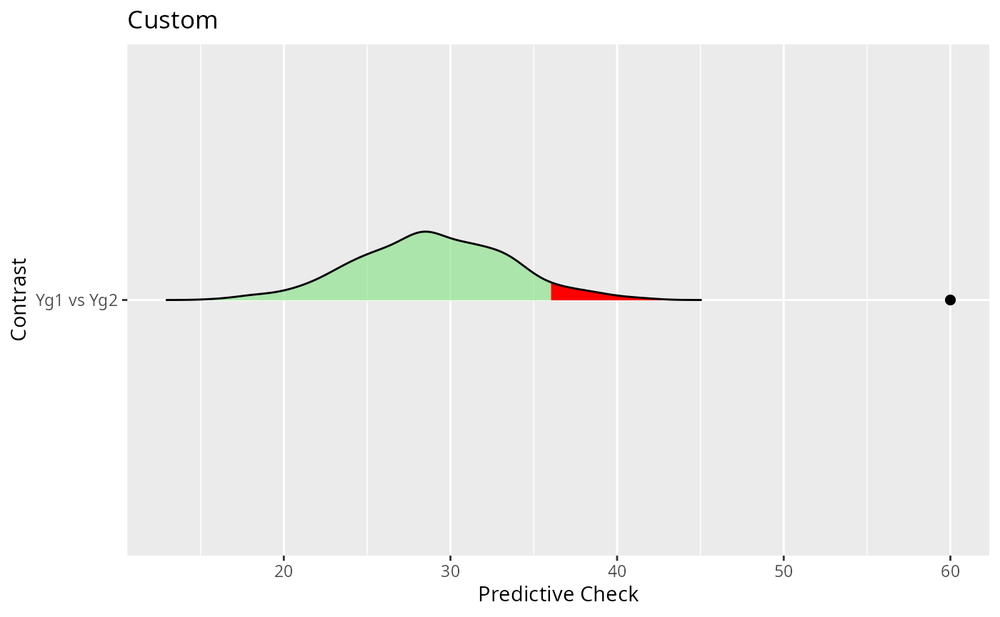
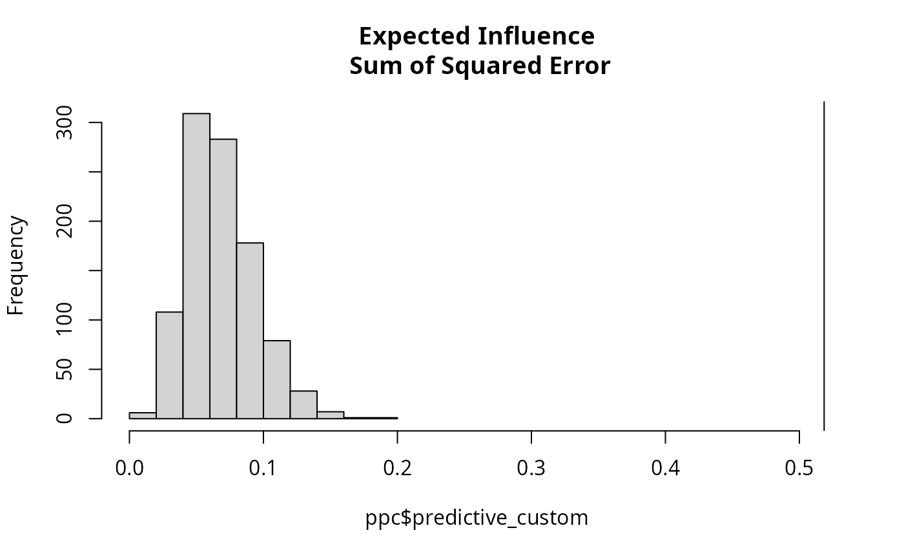

Background
It is quite common to have partial correlation networks (GGMs) for various subgroups, say, males and females, a control and treatment group, or perhaps several educational levels. In this case, it is important to not only determine whether the groups are different, but actually compare the groups in a way that answers a specific question of interest.
To date, most R packages provide a few ways to compare groups, including BGGM (version 1.0.0). In version 2.0.0, however, BGGM includes a new feature for the function ggm_compare_ppc that enables users to compare networks in any way they want.
Basic Idea
The technical details of the approach are described in (Williams et al. 2020). The basic idea is to
Draw samples from the posterior distribution, assuming the groups are equal (i.e., the “null” model).
-
Generate the posterior predictive distribution for the chosen test-statistic (how the groups are being compared)
- This can be understood as what we would expect to observe in the future (e.g., in replication), assuming the groups were in fact equal.
Compute the test-statistic for the observed groups.
-
Then compare the observed test-statistic to the predictive distribution (what is expected under the “null” model).
- If the observed error is larger than the model assuming group equality, this suggests that the groups are different.
In BGGM, the default is to compare the groups with respect to (symmetric) Kullback-Leibler divergence (i.e., “distance” between multivariate normal distributions) and the sum of squared error (for the partial correlation matrix). This was shown to be quite powerful in Williams et al. (2020), while also having a low false positive rate.
In the following, the focus is on defining custom functions and using them with ggm_compare_ppc. In all examples, post-traumatic stress disorder networks are compared (Fried et al. 2018).
R packages
# need the developmental version if (!requireNamespace("remotes")) { install.packages("remotes") } # install from github remotes::install_github("donaldRwilliams/BGGM")
Illustrative Examples
Correlation
This first example looks at the correlation between partial correlations of the two networks. Note that it could be two networks have what is considered a large correlation. However, the question here is, assuming the groups are equal, just how large should the correlation be? This is needed to interpret the observed test-statistic.
Step 1: Define Custom Function
The first step is to define a custom function that takes two data matrices and the output is the chosen test-statistic (in this case a correlation)
f <- function(Yg1, Yg2){ # number of nodes p <- ncol(Yg1) # index of off-diagonal indices <- upper.tri( diag(p)) # group 1: # fit model g1_fit <- estimate(Yg1, analytic = TRUE) # pcors g1_pcors <- pcor_mat(g1_fit)[indices] # group 2 # fit model g2_fit <- estimate(Yg2, analytic = TRUE) # pcors g2_pcors <- pcor_mat(g2_fit)[indices] # test-statistic cor(g1_pcors, g2_pcors) }
Step 2: Compute the Observed Score
The next step is to compute the observed test-statistic, that is, the correlation between the partial correlations.
obs <- f(Yg1, Yg2) # observed obs
## [1] 0.5399268Step 3: Predictive Check
With the function, f, and the observed scores, obs, in hand, what is left is the predictive check
ppc <- BGGM::ggm_compare_ppc(Yg1, Yg2, FUN = f, custom_obs = obs, iter = 1000, loss = FALSE)
Note that loss = FALSE controls how the p-value is computed. It is an indicator of whether the test-statistic is a “loss” (a bad thing). In this case, a large correlation is a good thing so it is set to FALSE. The results can then be printed
ppc## BGGM: Bayesian Gaussian Graphical Models
## ---
## Test: Global Predictive Check
## Posterior Samples: 1000
## Group 1: 926
## Group 2: 956
## Nodes: 16
## Relations: 120
## ---
## Call:
## BGGM::ggm_compare_ppc(Yg1, Yg2, iter = 1000, FUN = f, custom_obs = obs,
## loss = FALSE)
## ---
## Custom:
##
## contrast custom.obs p.value
## Yg1 vs Yg2 0.54 0
## ---which shows the posterior predictive p-value is zero. This indicates that the observed correlation is lower than the entire predictive distribution (the distribution of correlations for future data, assuming group equality)
and finally plot the results
plot(ppc)

The density is the predictive distribution for the correlation. Recall that this is the correlation that we would expect, given the groups were actually the same, and the black point is the observed correlation. In this case, it seems quite clear that the “null model” is inadequate–the groups are apparently quite different.
Hamming Distance
The next example is Hamming distance, which, in this case, is the squared error for the adjacency matrices. It seems reasonable to think of this as a test for different network structures or patterns of zeros and ones.
Step 1: Define Custom Function
The first step is to define a custom function that takes two data matrices and the output is the chosen test-statistic (in this case Hamming distance)
f <- function(Yg1, Yg2){ # nodes p <- ncol(Yg1) # index of off-diagonal indices <- upper.tri( diag(p)) # fit models fit1 <- BGGM::estimate(Yg1, analytic = TRUE) fit2 <- BGGM::estimate(Yg2, analytic = TRUE) # select graphs sel1 <- BGGM::select(fit1) sel2 <- BGGM::select(fit2) # hamming distance sum((sel1$adj[indices] - sel2$adj[indices]) ^ 2) }
Step 2: Compute the Observed Score
The next step is to compute the observed test-statistic, that is, the Hamming distance between adjacency matrices
obs <- f(Yg1, Yg2) # observed obs
## [1] 60Step 3: Predictive Check
With the function, f, and the observed scores, obs, in hand, what is left is the predictive check
ppc <- BGGM::ggm_compare_ppc(Yg1, Yg2, FUN = f, custom_obs = obs, iter = 1000)
The results can then be printed
ppc## BGGM: Bayesian Gaussian Graphical Models
## ---
## Test: Global Predictive Check
## Posterior Samples: 1000
## Group 1: 926
## Group 2: 956
## Nodes: 16
## Relations: 120
## ---
## Call:
## BGGM::ggm_compare_ppc(Yg1, Yg2, iter = 1000, FUN = f, custom_obs = obs)
## ---
## Custom:
##
## contrast custom.obs p.value
## Yg1 vs Yg2 60 0
## ---And then plot the results
plot(ppc)
## $plot_custom
This result is intriguing. Whereas the correlation looked at the relation between partial correlation, here there seems to be evidence that the adjacency matrices are different (perhaps suggesting that the conditional independence structure is different).
Partial Correlation Matrix Distance
There might also be interest in the so-called correlation matrix distance (Herdin et al. 2005). This is also easily tested, in this case for the partial correlation matrix.
Step 1: Define Custom Function
f <- function(Yg1, Yg2){ # nodes p <- ncol(Yg1) # index of off-diagonal indices <- upper.tri( diag(p)) # fit models fit1 <- BGGM::estimate(Yg1, analytic = TRUE) fit2 <- BGGM::estimate(Yg2, analytic = TRUE) pcor1 <- BGGM::pcor_mat(fit1) pcor2 <- BGGM::pcor_mat(fit2) # CDM for partial correlations # note: numerator is the trace; denominator is the Frobenius norm 1 - (sum(diag(pcor1 %*% pcor2)) / (norm(pcor1, type = "f") * norm(pcor2, type = "f"))) }
Step 2: Compute the Observed Score
The next step is to compute the observed test-statistic, that is, the Partial Correlation Matrix Distance
obs <- f(Yg1, Yg2) # observed obs
## [1] 0.3430489Step 3: Predictive Check
With the function, f, and the observed scores, obs, in hand, what is left is the predictive check
ppc <- BGGM::ggm_compare_ppc(Yg1, Yg2, FUN = f, custom_obs = obs, iter = 1000)
The results can then be printed
ppc## BGGM: Bayesian Gaussian Graphical Models
## ---
## Test: Global Predictive Check
## Posterior Samples: 1000
## Group 1: 926
## Group 2: 956
## Nodes: 16
## Relations: 120
## ---
## Call:
## BGGM::ggm_compare_ppc(Yg1, Yg2, iter = 1000, FUN = f, custom_obs = obs)
## ---
## Custom:
##
## contrast custom.obs p.value
## Yg1 vs Yg2 0.343 0
## ---which again provides a p-value of zero.
Note that the object ppc includes the predictive samples that allows for user defined plots (in the event something custom is desired).
hist(ppc$predictive_custom, xlim = c(0, obs), main = "Partial Correlation Matrix Distance") abline(v = obs)

Note that the line is the observed which again makes it clear that the distance is quite surprising, assuming the null model were true.
Assortment
This next example is assortment (Newman 2003), which is a measure related to clustering in a network. Here the test is for a difference in assortment. This is computed by taking the difference (absolute value) for each draw from the predictive distribution.
Step 1: Define Custom Function
# clusters based on DSM-5 comms <- c( rep("A", 4), rep("B", 7), rep("C", 5) ) f <- function(Yg1, Yg2){ fit1 <- BGGM::estimate(Yg1, analytic = TRUE) fit2 <- BGGM::estimate(Yg2, analytic = TRUE) pcor1 <- BGGM::pcor_mat(fit1) pcor2 <- BGGM::pcor_mat(fit2) assort1 <- assortnet::assortment.discrete(pcor1, types = comms, weighted = TRUE, SE = FALSE, M = 1)$r assort2 <- assortnet::assortment.discrete(pcor2, types = comms, weighted = TRUE, SE = FALSE, M = 1)$r (assort1 - assort2) }
Step 2: Compute the Observed Score
The next step is to compute the observed test-statistic, that is, assortment for the two groups
obs <- f(Yg1, Yg2) # observed obs
## [1] 0.1915766Step 3: Predictive Check
With the function, f, and the observed score, obs, in hand, the next step is the predictive check
ppc <- BGGM::ggm_compare_ppc(Yg1, Yg2, FUN = f, custom_obs = obs, iter = 1000)
The results can then be printed
ppc## BGGM: Bayesian Gaussian Graphical Models
## ---
## Test: Global Predictive Check
## Posterior Samples: 1000
## Group 1: 926
## Group 2: 956
## Nodes: 16
## Relations: 120
## ---
## Call:
## BGGM::ggm_compare_ppc(Yg1, Yg2, iter = 1000, FUN = f, custom_obs = obs)
## ---
## Custom:
##
## contrast custom.obs p.value
## Yg1 vs Yg2 0.192 0
## ---and plotted
plot(ppc)
## $plot_custom## Picking joint bandwidth of 0.00711
which shows that the clustering in the data appears to be different (given the observed value exceeds the entire predictive distribution).
Expected Influence
This last example looks at the expected influence for the network (Robinaugh, Millner, and McNally 2016). In this case, the sum of squared error is the test statistic. This is computed from the squared error for each draw from the predictive distribution.
Step 1: Define Custom Function
f <- function(Yg1, Yg2){ fit1 <- BGGM::estimate(Yg1, analytic = TRUE) fit2 <- BGGM::estimate(Yg2, analytic = TRUE) pcor1 <- BGGM::pcor_mat(fit1) pcor2 <- BGGM::pcor_mat(fit2) ei1 <- networktools::expectedInf(pcor1)$step1 ei2 <- networktools::expectedInf(pcor2)$step1 sum((ei1 - ei2)^2) }
Step 2: Compute the Observed Score
The next step is to compute the observed test-statistic, that is, the sum of squared error for expected influence
obs <- f(Yg1, Yg2) # observed obs
## [1] 0.518462Step 3: Predictive Check
With the function, f, and the observed scores, obs, in hand, what is left is the predictive check
ppc <- BGGM:::ggm_compare_ppc(Yg1, Yg2, FUN = f, custom_obs = obs, iter = 1000)
The results can then be printed
ppc## BGGM: Bayesian Gaussian Graphical Models
## ---
## Test: Global Predictive Check
## Posterior Samples: 1000
## Group 1: 926
## Group 2: 956
## Nodes: 16
## Relations: 120
## ---
## Call:
## BGGM:::ggm_compare_ppc(Yg1, Yg2, iter = 1000, FUN = f, custom_obs = obs)
## ---
## Custom:
##
## contrast custom.obs p.value
## Yg1 vs Yg2 0.518 0
## ---and plotted
hist(ppc$predictive_custom, xlim = c(0, obs), main = "Expected Influence\n Sum of Squared Error") abline(v = obs)
 which again shows the sum of squared error for expected influence far exceeds what would be expected, assuming the null model were true.
Two Notes of Caution
Note that only the default in BGGM have been shown to have nominal error rates. However, there is a proof that suggests the error rate cannot be larger than \(2\alpha\) (Meng and others 1994), and, further, a predictive check is typically below \(\alpha\) (i.e., a tendency to be conservative, Gelman and others 2013).
Failing to reject the null model does not indicate the groups are the same! To test for equality see
ggm_compare_exploreandggm_compare_confirm.
Conclusion
These example certainly open the door for tailoring network comparison to answer specific research questions.
References
Fried, Eiko I, Marloes B Eidhof, Sabina Palic, Giulio Costantini, Hilde M Huisman-van Dijk, Claudi LH Bockting, Iris Engelhard, Cherie Armour, Anni BS Nielsen, and Karen-Inge Karstoft. 2018. “Replicability and Generalizability of Posttraumatic Stress Disorder (Ptsd) Networks: A Cross-Cultural Multisite Study of Ptsd Symptoms in Four Trauma Patient Samples.” Clinical Psychological Science 6 (3): 335–51.
Gelman, Andrew, and others. 2013. “Two Simple Examples for Understanding Posterior P-Values Whose Distributions Are Far from Uniform.” Electronic Journal of Statistics 7: 2595–2602.
Herdin, Markus, Nicolai Czink, Hüseyin Ozcelik, and Ernst Bonek. 2005. “Correlation Matrix Distance, a Meaningful Measure for Evaluation of Non-Stationary Mimo Channels.” In 2005 Ieee 61st Vehicular Technology Conference, 1:136–40. IEEE.
Meng, Xiao-Li, and others. 1994. “Posterior Predictive \(p\)-Values.” The Annals of Statistics 22 (3): 1142–60.
Newman, Mark EJ. 2003. “Mixing Patterns in Networks.” Physical Review E 67 (2): 026126.
Robinaugh, Donald J, Alexander J Millner, and Richard J McNally. 2016. “Identifying Highly Influential Nodes in the Complicated Grief Network.” Journal of Abnormal Psychology 125 (6): 747.
Williams, Donald R., Philippe Rast, Luis R Pericchi, and Joris Mulder. 2020. “Comparing Gaussian Graphical Models with the Posterior Predictive Distribution and Bayesian Model Selection.” Psychological Methods.